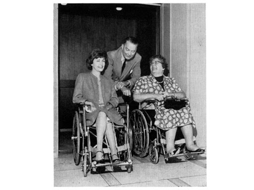
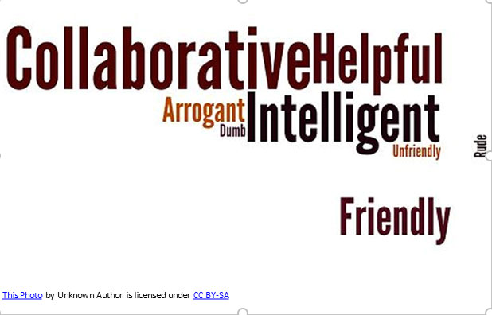

The credits line should appear at the end of a caption, either in parentheses or in a different type (or both). A photographer’s name can also be put in small type parallel to the bottom or side of a photograph.
Photo order should be denoted in italics. i.e. Left to right: Louis Langree, Mostly Mozart Festival Orchestra, Joshua Bell Above: Joshua Bell Below: Mostly Mozart Festival Orchestra Abbreviated version: l-r: Louis Langree, Mostly Mozart Festival Orchestra, Joshua Bell (en dash; lowercase)
Alt-text provides people with limited to no vision descriptions about what is on a web page. This text alternative to an image is an attribute within HTML that provides contextual descriptions of images or other media documents on a web page. All images on LCPA’s website will include descriptive alt-text, beginning with new events.
The alt-text attribute serves the following purposes:
Alt-text is an attribute of the image tag, and is usually written like this: Caption: Mrs. John B. Conners (left), Dr. Howard Rusk (center), and Miss Ruth Anderson(right), during a rehearsal in Philharmonic Hall (now David Geffen Hall). Descriptive Alt-text: <img src=”conners-rusk-anderson.jpg” alt= “Mrs. John B. Conners and Miss Ruth Anderson are side-by-side in wheelchairs, while Dr. Howard Rusk, stands between them, resting his arms on their wheelchairs. All three people are smiling while dressed in formal attire. The photograph is in black and white.” /> Source: Bette Knapp and the Pursuit of Inclusion.
If the image is of a word, for example:
Caption: The power of words, where positive words are larger than negative words. Alt-text: <img src=”collaborative-text.jpg” alt=” Words collaborative, helpful, intelligent and friendly in larger font. Arrogant, dumb, rude, unfriendly in smaller font.” />. If the image has complex information — such as charts or graphs — the image should have a short alt text to identify the image, and then the detailed description of the information should be provided elsewhere (for example, in a data table). For more information, visit: https://www.w3.org/WAI/tutorials/images/informative/